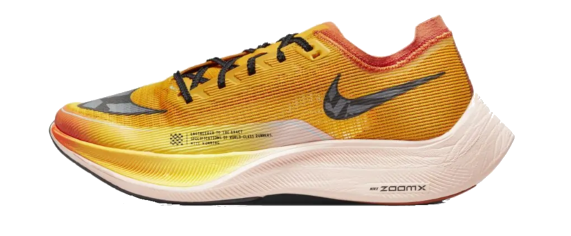

Nike

Tênis Nike ZoomX Vaporfly Next%2
Excelente para corridas
Acompanhe a próxima evolução da velocidade com um tênis de corrida criado para ajudar você a perseguir novas metas e recordes. O Nike ZoomX Vaporfly Next% 2 baseia-se no modelo adorado por corredores de todo o mundo. Ele apresenta conforto e respirabilidade aprimorados com uma parte de cima reformulada. Seja para corridas ou maratonas, a nova versão ainda conta com o amortecimento ágil e a sustentação segura para que você atinja seu potencial máximo. O melhor amortecimento reativo de todos os tempos
R$1799,99